- 00 开篇词 打破四大认知局限，进阶高级性能工程师.md.html
- 01 性能工程：为什么很多性能测试人员无法对性能结果负责？.md.html
- 02 关键概念：性能指标和场景的确定.md.html
- 03 核心分析逻辑：所有的性能分析，靠这七步都能搞定.md.html
- 04 如何构建性能分析决策树和查找瓶颈证据链？.md.html
- 05 性能方案：你的方案是否还停留在形式上？.md.html
- 06 如何抽取出符合真实业务场景的业务模型？.md.html
- 07 性能场景的数据到底应该做成什么样子？.md.html
- 08 并发、在线和TPS到底是什么关系？.md.html
- 09 如何设计全局和定向监控策略？.md.html
- 10 设计基准场景需要注意哪些关键点？.md.html
- 11 打开首页之一：一个案例，带你搞懂基础硬件设施的性能问题.md.html
- 12 打开首页之二：如何平衡利用硬件资源？.md.html
- 13 用户登录：怎么判断线程中的Block原因？.md.html
- 14 用户信息查询：如何解决网络软中断瓶颈问题？.md.html
- 15 查询商品：资源不足有哪些性能表现？.md.html
- 16 商品加入购物车：SQL优化和压力工具中的参数分析.md.html
- 17 查询购物车：为什么铺底参数一定要符合真实业务特性？.md.html
- 18 购物车信息确定订单：为什么动态参数化逻辑非常重要？.md.html
- 19 生成订单信息之一：应用JDBC池优化和内存溢出分析.md.html
- 20 生成订单信息之二：业务逻辑复杂，怎么做性能优化？.md.html
- 21 支付前查询订单列表：如何分析优化一个固定的技术组件？.md.html
- 22 支付订单信息：如何高效解决for循环产生的内存溢出？.md.html
- 23 决定容量场景成败的关键因素有哪些？.md.html
- 24 容量场景之一：索引优化和Kubernetes资源分配不均衡怎么办？.md.html
- 25 容量场景之二：缓存对性能会有什么样的影响？.md.html
- 26 稳定性场景之一：怎样搞定业务积累量产生的瓶颈问题？.md.html
- 27 稳定性场景之二：怎样搞定磁盘不足产生的瓶颈问题？.md.html
- 28 如何确定异常场景的范围和设计逻辑？.md.html
- 29 异常场景：如何模拟不同组件层级的异常？.md.html
- 30 如何确定生产系统配置？.md.html
- 31 怎么写出有价值的性能报告？.md.html
- 我们这个课程的系统是怎么搭建起来的？.md.html
- 结束语 做真正的性能项目.md.html
- 捐赠
29 异常场景：如何模拟不同组件层级的异常？
你好，我是高楼。
上节课我们讲到，在具体的项目中，异常场景如果想做得细而全，是不可能的，成本高不说，收益看起来也并不大。
不过，我们在判断异常场景的范围和设计异常场景的时候，还是要注意把整个架构中的所有层级的组件都覆盖全，不能遗漏。这就要求异常场景的设计者必须对架构有足够的了解，这也是设计的难点。
在当前的技术市场中，应用异常、操作系统异常、容器异常和虚拟机异常是大家经常考虑的几个异常场景，而这些场景也基本上模拟了微服务分布式架构中非常常见的异常问题。
因此，这节课，我就带你从这几个异常场景出发，看看怎么解决设计上的一些难点。
应用异常
在应用的异常场景中，我会用限流、降级熔断这两个示例来给你讲解。在传统的异常场景中，并没有这两个异常场景。不过，在当前微服务发展迅猛的技术市场中，限流和降级熔断是必不可少的。
这里我选择用Sentinel工具（如果你对工具本身不熟悉的，请搜索下网上的资源），它是面向分布式服务架构的流量防护组件，主要以流量为切入点，从限流、熔断降级、系统负载保护、热点防护等多个维度来帮助开发者保障微服务的稳定性。
当然你也可以用其他的工具来实现，只要在设计上符合我们在上节课中讲的这张图就可以了：
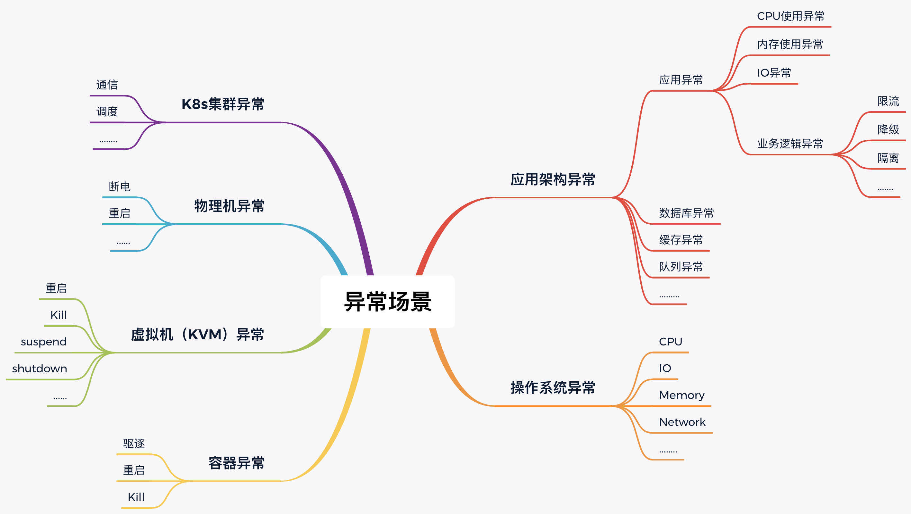
限流
对于限流来说，我们首先得知道系统中有多大的流量，在我们这个异常场景中，可以通过实时的监控看到每个服务的流量。
在我们的这个架构中，Order服务显然是个重点服务，所以，这里我用Order服务来做演示。
为了让限流产生效果，我们要把压力产生的TPS限制在限流的配置以下，根据第21讲中的优化结果，我们知道支付前查询订单列表的TPS能达到700～800TPS。现在我把限流设置在100以下，规则配置如下：
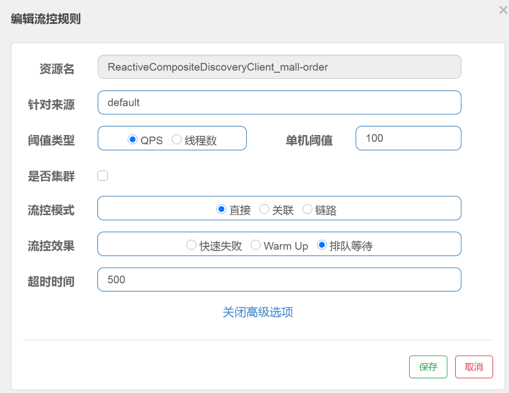
配置了以后，我们再去看实时流量中的Order服务：
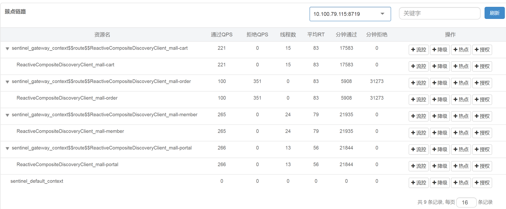
可以看到，Order服务通过的QPS确实被限制在了100，100就是我们在上一步配置限流规则时设置的单机阈值。我说明一下，这个工具中的QPS，就是每秒请求数，而我在压力工具中是直接用一个请求对应一个事务的，所以，你可以把QPS看成TPS。
通过上图“通过QPS”和“拒绝QPS”的数值来看，只有约20%的请求通过了，其他的都被拒绝了。对应到压力工具中，支付前查询订单列表的TPS图如下：
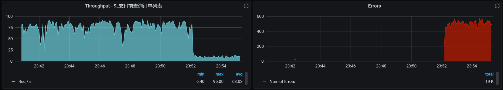
你看，TPS下降了很多。但是，我们同时也可以看到了大量的报错。这时候我们就要注意了，看看这个报错合理不合理。
如果是最终用户，他看到的应该是“系统繁忙，请稍后再试”这样的提示，而不是“http error code”。所以，如果这里是因为我们在脚本中做了断言而报错，那就要修改下断言的判断内容了。而在我的脚本中，由于只断言了http 200，对其他的http返回码都报错，我们才会在Errors图中看到很多的红色错误。
如果你想处理这样的错误，可以在代码中加上友好返回的逻辑，但我们现在是在分析性能问题，所以对这个功能点的优化建议只要提给开发就可以了。
那对应的系统资源呢？
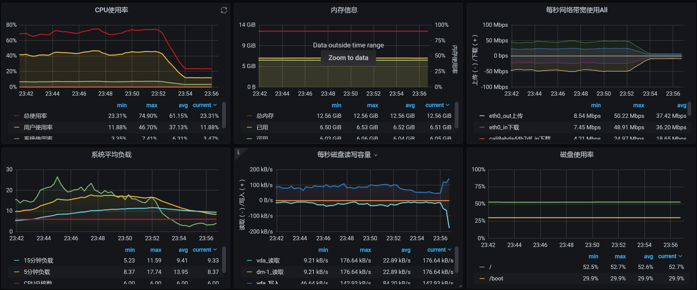
可以看到，系统资源使用率也下降了，这就达到了限流的效果，至少我们保证了这个服务自己不会死。
对应到Sentinel中的数据，当我们把限流规则删掉之后，看到请求也是可以恢复的：
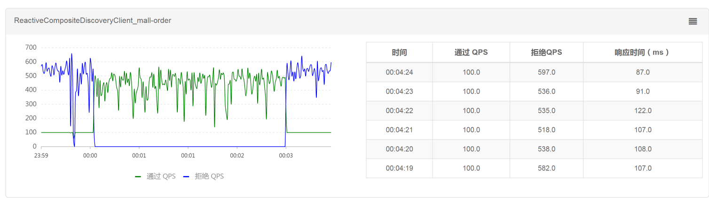
所以说，在我们这个案例中，限流是生效的，并且效果还挺明显。
降级熔断
针对降级熔断，我们也做个案例看一下。
我把Portal服务的最大响应时间设置为10ms。请你注意哦，在我们这个案例中，我使用的是打开首页这个业务，而打开首页业务的响应时间都是大于10ms的。所以，我们看看降级规则有没有用。
我们先配置一下降级规则，主要参数有：
- 资源名，也就是服务名；
- 最大RT（响应时间）；
- 比例阈值，就是当慢的请求超过设置的比例阈值时就会被熔断；
- 熔断时长，也就是熔断的时间长度，在这个时间之后TPS就会恢复；
- 最小请求数，即允许有多少请求通过。
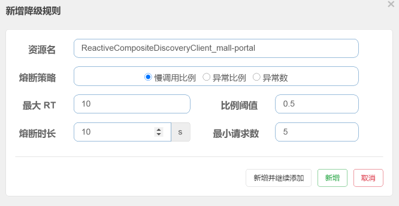
然后，我们把打开首页的压力场景跑起来并持续运行一会，看看TPS曲线是个什么样子：
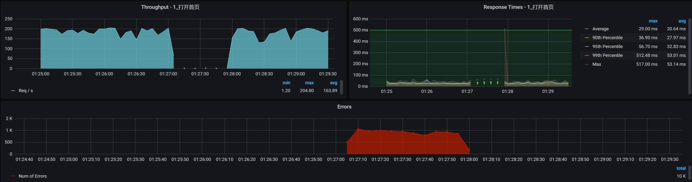
这个结果很清楚，当场景运行了一段时间之后，由于响应时间大于降级规则中的最大响应时间10ms，所有请求随后被熔断10s，而在这10s中，TPS是直接掉到零的，并且也报了错。
我们再来看Sentinel中的TPS曲线图，是否和上图中的TPS曲线一致：
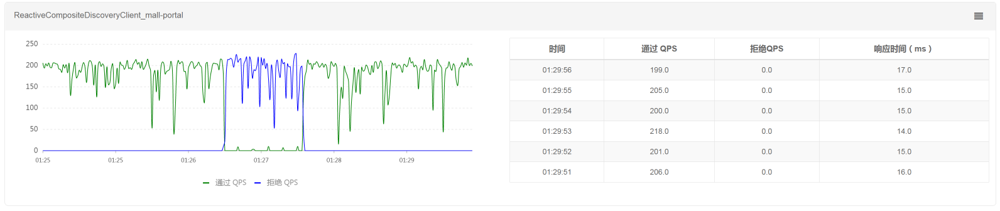
可以看到，Sentinel中的TPS曲线图和上图中的TPS曲线是一致的，说明降级熔断规则确实生效了。因为没有小于10ms的请求，所以在降级熔断区间一直在报错。当我们删除了规则之后，TPS也就恢复了。
我们重新设置一下最大响应时间为30ms，因为打开首页的平均响应时间在30ms以下，这时我们来看一下降级熔断的效果如何。注意，熔断时长为10s。
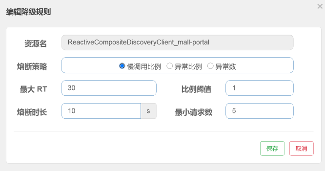
我们来看看对应的TPS图：
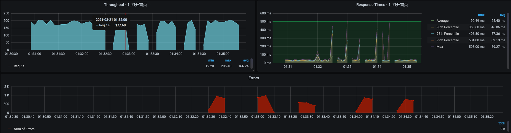
报错断断续续的；TPS时而掉下来，但也有恢复的时候。这就是当打开首页的响应时间超过30ma的时候，TPS就会断一次，并且一次断10s，然后又恢复。刚恢复的时候又判断出有响应时间大于30ms的请求，于是又接着熔断……因此，我们看到了这样的结果。
这说明我们制定的降级熔断规则生效了。
在上述限流和降级熔断的两个例子中，有两点需要你作出判断：
规则有没有生效；
终端用户看到的是什么界面，如果看到的不是友好界面，你就可以提Bug了。
下面我们来模拟一下操作系统级别的异常。
操作系统级别异常
我们知道，操作系统有好几个层级，包括物理机和虚拟机，此外，有些企业的Pod中也有全量操作系统。在这里，我们用虚拟机（也就是我们的worker机器）级别的操作系统来模拟异常。如果你想在项目中做全，也可以采用同样的逻辑把每个层级的操作系统都做一遍。
在这里我用CPU、内存、网络、磁盘四个角度来模拟操作系统中的异常，因为这几个是操作系统中最重要的资源了。
CPU异常
我们先来看CPU的异常。
请你注意，在模拟CPU异常的时候，我们一定要知道是从哪个角度模拟的。
如果你想模拟应用本身消耗CPU高，那就得去改代码了。如果没改代码，CPU就已经很高了，那就是明显的Bug。像这样的Bug，我们在第22讲的案例中已经写过，你可以再回顾下怎么处理。
而CPU异常模拟，有两种情况：
1.在应用中模拟业务线程之间抢CPU的异常；
- 在同一台机器上的其他进程抢被测业务进程的CPU。
在这里，我们来模拟一下CPU被其他进程占用的异常。
我们先查看一下当前的CPU消耗情况：
%Cpu0 : 46.4 us, 2.7 sy, 0.0 ni, 48.8 id, 0.0 wa, 0.0 hi, 2.0 si, 0.0 st
%Cpu1 : 29.4 us, 4.2 sy, 0.0 ni, 64.0 id, 0.0 wa, 0.0 hi, 2.4 si, 0.0 st
%Cpu2 : 37.8 us, 3.8 sy, 0.0 ni, 55.6 id, 0.0 wa, 0.0 hi, 2.4 si, 0.3 st
%Cpu3 : 26.0 us, 4.6 sy, 0.0 ni, 67.4 id, 0.0 wa, 0.0 hi, 1.8 si, 0.4 st
%Cpu4 : 33.7 us, 4.8 sy, 0.0 ni, 59.1 id, 0.0 wa, 0.0 hi, 2.4 si, 0.0 st
%Cpu5 : 29.9 us, 3.8 sy, 0.0 ni, 63.6 id, 0.0 wa, 0.0 hi, 2.7 si, 0.0 st
从上面的数据来看，在当前的压力场景下，us cpu用到了30%左右，而id cpu还有60%左右。显然，操作系统还是有空闲的CPU可以用的。
接下来，我们使用stress命令模拟CPU被消耗完，我打算把6个C全都占完：
stress -c 6 -t 100
然后我们用top命令查看一下效果：
%Cpu0 : 97.3 us, 2.3 sy, 0.0 ni, 0.0 id, 0.0 wa, 0.0 hi, 0.3 si, 0.0 st
%Cpu1 : 93.5 us, 2.4 sy, 0.0 ni, 2.4 id, 0.0 wa, 0.0 hi, 1.7 si, 0.0 st
%Cpu2 : 98.0 us, 1.3 sy, 0.0 ni, 0.0 id, 0.0 wa, 0.0 hi, 0.7 si, 0.0 st
%Cpu3 : 98.0 us, 1.0 sy, 0.0 ni, 0.0 id, 0.0 wa, 0.0 hi, 1.0 si, 0.0 st
%Cpu4 : 97.7 us, 1.3 sy, 0.0 ni, 0.3 id, 0.0 wa, 0.0 hi, 0.7 si, 0.0 st
%Cpu5 : 94.2 us, 3.1 sy, 0.0 ni, 0.0 id, 0.0 wa, 0.0 hi, 2.7 si, 0.0 st
看，us cpu占用很高了！
我们再执行vmstat命令，对比一下模拟前后的数据：
模拟前：
[root@k8s-worker-6 ~]# vmstat 1
procs -----------memory---------- ---swap-- -----io---- -system-- ------cpu-----
r b swpd free buff cache si so bi bo in cs us sy id wa st
10 0 0 6804936 140 4640292 0 0 1 5 1 2 12 3 85 0 0
3 0 0 6806228 140 4640336 0 0 0 0 12290 15879 21 5 74 0 0
1 0 0 6806972 140 4640336 0 0 0 0 11070 13751 24 5 71 0 0
1 0 0 6808124 140 4640416 0 0 0 9 10944 13165 27 5 68 0 0
6 0 0 6806400 140 4640504 0 0 0 0 11591 14836 24 6 71 0 0
11 0 0 6801328 140 4640516 0 0 0 0 11409 13859 31 6 63 0 0
模拟后：
[root@k8s-worker-6 ~]# vmstat 1
procs -----------memory---------- ---swap-- -----io---- -system-- ------cpu-----
r b swpd free buff cache si so bi bo in cs us sy id wa st
27 0 0 7072940 140 4363564 0 0 1 5 1 2 12 3 85 0 0
30 0 0 7072244 140 4363620 0 0 0 0 10523 6329 97 3 0 0 0
40 0 0 7052732 140 4363584 0 0 472 176 11478 8399 95 5 0 0 0
40 0 0 7070636 140 4363660 0 0 0 0 9881 6546 98 2 0 0 0
28 0 0 7074060 140 4363676 0 0 0 0 9919 6520 98 2 0 0 0
38 0 0 7074180 140 4363688 0 0 0 0 10801 7946 97 3 0 0 0
34 0 0 7074228 140 4363692 0 0 0 0 10464 6298 97 3 0 0 0
看到没？us cpu使用率很高，CPU队列也长了很多，in并没有什么太大的变化，不过cs倒是小了很多。这说明我们并没有模拟出CPU争用的情况，只是消耗了CPU而已。
这时候，压力工具中的曲线效果如下：
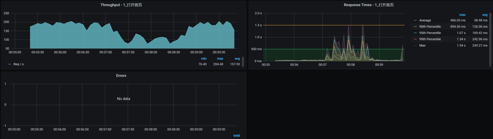
从TPS和响应时间上来看，业务确实是慢了。但是，没有报错哦。我们这个场景就是典型的CPU不足把应用拖慢的情况了。
内存异常
内存异常也是性能分析中的一大要点，我们用下面这个命令来模拟一下。在这个命令中，我们用30个工作线程模拟分配10G的内存并持续50秒：
stress --vm 30 --vm-bytes 10G --vm-hang 50 --timeout 50s
在压力持续期间，我把上面这个命令执行了两次，我们来看看TPS曲线效果：
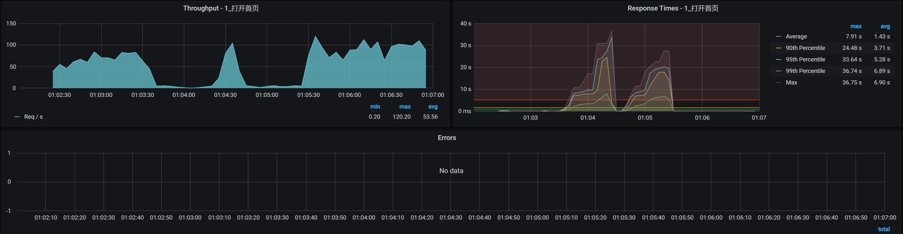
可以看到，应用照样没有报错，只是响应时间增加了很多。
从CPU异常和内存异常这两个例子中，相信你不难发现，操作系统还是比较坚强的，即便是资源不够用了，它也在努力为你服务。
那对于这两个例子中的异常，我们后续的步骤是什么呢？
首先，我们肯定得找到问题点在哪里，然后把它解决掉。至于具体的分析步骤，就是我们在第3讲中描述的RESAR性能工程的分析逻辑了。
如果在生产环境中出现CPU或内存问题的话，请注意，最重要的是系统能不能快速恢复。因此，如果你在执行异常场景时，看到CPU或内存消耗高、TPS下降或者响应时间增加等问题，并且在模拟异常没有停止的时候，TPS和响应时间也一直没有恢复，那你就可以报Bug了。因为我们期望的是业务能恢复。
网络异常
网络可以说是非常大的一块知识点，它涉及到的细节太多了。不过，做性能分析的人一定要懂网络，不是要学得有多深，而是要会判断问题。我选择两个常见的网络异常案例：丢包和延迟，来给你具体讲讲。
事先说明一下，我用的是操作系统的tc命令，来模拟网络丢包和延迟，因为这是最简单直接的手段了，现在有很多混沌工具也是用这个命令来实现的。我觉得用命令可能更直接点，不用装什么工具，快捷方便。
丢包
我们先模拟丢包10%：
tc qdisc add dev eth0 root netem loss 10%
然后查看对应的压力工具曲线：
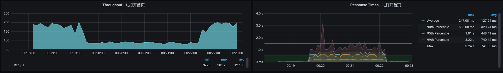
可以看到，在模拟丢包的过程中，我们只丢包了10%，并不是全丢，TPS就已经从200左右降到80左右。
而TCP层发现了丢包之后，会根据TCP重传机制触发重传（这个重传的逻辑你可以自行搜索一下）。如果这时候我们抓包的话，会看到retransmission的包。
在这种情况之下，响应时间就会增加，但是业务还没到报错的程度，这一点我们在上图中也可以看到。
为了看到当前的网络健康状态，我们在丢包过程中，使用ping命令来查看一下：
C:\Users\Zee>ping 172.16.106.79 -t
正在 Ping 172.16.106.79 具有 32 字节的数据:
来自 172.16.106.79 的回复: 字节=32 时间=79ms TTL=62
来自 172.16.106.79 的回复: 字节=32 时间=57ms TTL=62
来自 172.16.106.79 的回复: 字节=32 时间=74ms TTL=62
来自 172.16.106.79 的回复: 字节=32 时间=60ms TTL=62
来自 172.16.106.79 的回复: 字节=32 时间=55ms TTL=62
请求超时。
请求超时。
来自 172.16.106.79 的回复: 字节=32 时间=71ms TTL=62
来自 172.16.106.79 的回复: 字节=32 时间=75ms TTL=62
来自 172.16.106.79 的回复: 字节=32 时间=71ms TTL=62
来自 172.16.106.79 的回复: 字节=32 时间=71ms TTL=62
来自 172.16.106.79 的回复: 字节=32 时间=62ms TTL=62
请求超时。
来自 172.16.106.79 的回复: 字节=32 时间=51ms TTL=62
来自 172.16.106.79 的回复: 字节=32 时间=64ms TTL=62
来自 172.16.106.79 的回复: 字节=32 时间=74ms TTL=62
来自 172.16.106.79 的回复: 字节=32 时间=83ms TTL=62
来自 172.16.106.79 的回复: 字节=32 时间=69ms TTL=62
明显是丢包了对不对？从逻辑上来看，丢包重传会导致TPS下降和响应时间增加，但是并不会报错，这就是TCP功劳了。
不过，要是在模拟的整个过程中，业务都没有自动恢复，那你就要报Bug了。因为对于成熟的架构来说，应该自己就能判断出丢包的应用节点，并做流量的转发控制，这也是集群的策略应该保证的。
延迟
延迟问题很常见，偶尔出现的大流量或者网络设备资源争用，都有可能导致网络延迟。我们在延迟高的时候，要关注一下网络设备，比如路由器、交换机，看看它们有没有出现延迟高的问题。最后，还有一个环节不要忘了，就是防火墙，因为防火墙也可以配置惩罚规则，导致延迟增加。
我们在这里给本机网络加上100ms的延迟，网络延迟的模拟命令如下：
tc qdisc add dev eth0 root netem delay 100ms
要想判断延迟有没有出现也比较容易，直接用ping命令就可以，ping后的效果如下：
64 bytes from 172.16.106.79: icmp_seq=73 ttl=64 time=0.234 ms
64 bytes from 172.16.106.79: icmp_seq=74 ttl=64 time=0.259 ms
64 bytes from 172.16.106.79: icmp_seq=75 ttl=64 time=0.280 ms
64 bytes from 172.16.106.79: icmp_seq=76 ttl=64 time=0.312 ms
64 bytes from 172.16.106.79: icmp_seq=77 ttl=64 time=0.277 ms
64 bytes from 172.16.106.79: icmp_seq=78 ttl=64 time=0.231 ms
64 bytes from 172.16.106.79: icmp_seq=79 ttl=64 time=0.237 ms
64 bytes from 172.16.106.79: icmp_seq=80 ttl=64 time=100 ms
64 bytes from 172.16.106.79: icmp_seq=81 ttl=64 time=100 ms
64 bytes from 172.16.106.79: icmp_seq=82 ttl=64 time=100 ms
64 bytes from 172.16.106.79: icmp_seq=83 ttl=64 time=100 ms
64 bytes from 172.16.106.79: icmp_seq=84 ttl=64 time=100 ms
64 bytes from 172.16.106.79: icmp_seq=85 ttl=64 time=100 ms
64 bytes from 172.16.106.79: icmp_seq=86 ttl=64 time=100 ms
64 bytes from 172.16.106.79: icmp_seq=87 ttl=64 time=100 ms
看到了没？ping的time直接就到100ms了，这和我们加在网络上的延迟一致。
延迟出现后，整个系统对应的TPS曲线效果如下：
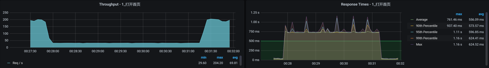
可以清楚地看到，网络延迟会导致TPS下降、响应时间增加，并且影响是非常明显而直接的：我们只模拟了100ms的延迟，响应时间就增加了几十倍。
针对网络延迟对业务造成的影响，我们的应对机制仍然是快速恢复，这时候就要看网络上有没有备用资源了。如果在模拟的时间内，备用资源没有生效，那你就可以报Bug了。
磁盘异常
对于磁盘异常，有很多工具可以模拟。不过，由于我比较喜欢fio，简单便捷，我就用fio来模拟一下异常的大量随机写：
fio --filename=fio.tmp --direct=1 --rw=randwrite --bs=4k --size=1G --numjobs=64 --runtime=100 --group_reporting --name=test-rand-write
接着，我们在top中看看wa cpu是不是高起来了：
%Cpu0 : 46.2 us, 4.3 sy, 0.0 ni, 2.4 id, 46.6 wa, 0.0 hi, 0.5 si, 0.0 st
%Cpu1 : 15.5 us, 8.3 sy, 0.0 ni, 2.9 id, 70.9 wa, 0.0 hi, 1.9 si, 0.5 st
%Cpu2 : 13.8 us, 6.9 sy, 0.0 ni, 3.4 id, 74.4 wa, 0.0 hi, 1.5 si, 0.0 st
%Cpu3 : 24.1 us, 7.9 sy, 0.0 ni, 0.0 id, 67.5 wa, 0.0 hi, 0.5 si, 0.0 st
%Cpu4 : 27.1 us, 6.4 sy, 0.0 ni, 0.0 id, 65.5 wa, 0.0 hi, 1.0 si, 0.0 st
%Cpu5 : 19.8 us, 5.9 sy, 0.0 ni, 3.5 id, 69.8 wa, 0.0 hi, 1.0 si, 0.0 st
从上面的数据看，wa cpu已经达到70%左右，这就是我们要的效果。
我们再来看看对应的TPS曲线效果：
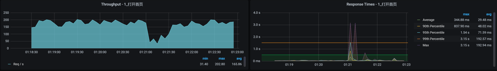
你看，TPS曲线中间有掉下来的情况，响应时间也有增加的趋势，但并没有报错。
虽然响应时间有所增加，但是请你注意，我们这里持续的模拟时间比图中TPS下降的这一段时间是要长的，这说明我们这个应用对IO的依赖并不大。想想也是，这个应用只不过是写写日志，还是异步写，能有多大的依赖。
这里我要说明一下，wa cpu其实并没有被真正的消耗掉，是空闲的CPU，它的百分比只是记录了CPU等IO的时间片比例。所以，虽然wa cp看起来很高，但是如果有其他应用需要CPU的话，也是能抢过去的。
针对操作系统级别的异常，我们这里用了CPU、内存、网络、磁盘几个最重要的系统资源做了演示，你可以根据这个思路在具体的项目中做更多的扩展，还会有很多的异常场景可以设计。
容器异常
对于当前技术市场中流行的Kubernetes+容器的架构来说，不做容器级异常，实在是说不过去。
我们知道，容器的基础镜像有大有小，具体多大就要看你用的是哪种镜像了。不过，我们先不管它，直接从操作容器的角度来模拟。因为如果容器出现异常的话，Kubernetes基本上就会直接操作整个容器，不会对容器做什么细节上的调整。
这里，我们来看看Kubernetes经常对容器做的两个操作，kill容器和驱逐容器。
kill容器
为了方便操作，我先把两个portal实例都指定到一个worker上去。
我们先查看一下，在这个worker上是否已经有了两个Portal实例了，以便我们做操作时再来查看以做对比。
[root@k8s-worker-6 ~]# docker ps |grep portal
c39df7dc8b1b 243a962aa179 "java -Dapp.id=svc-m…" About a minute ago Up About a minute k8s_mall-portal_svc-mall-portal-5845fcd577-dddlp_default_4ccb1155-5521-460a-b96e-e2a22a82f5ee_0
4be31b5e728b registry.aliyuncs.com/k8sxio/pause:3.2 "/pause" About a minute ago Up About a minute k8s_POD_svc-mall-portal-5845fcd577-dddlp_default_4ccb1155-5521-460a-b96e-e2a22a82f5ee_0
c9faa33744e0 243a962aa179 "java -Dapp.id=svc-m…" About a minute ago Up About a minute k8s_mall-portal_svc-mall-portal-5845fcd577-cx5th_default_06117072-9fe2-4882-8939-3a313cf1b3ad_0
7b876dd6b860 registry.aliyuncs.com/k8sxio/pause:3.2 "/pause" About a minute ago Up About a minute k8s_POD_svc-mall-portal-5845fcd577-cx5th_default_06117072-9fe2-4882-8939-3a313cf1b3ad_0
你看，这个worker上确实已经有这两个Portal实例了。
现在我们杀一个pod，看看Kubernetes会做出什么样的反应。
[root@k8s-worker-6 ~]# docker kill -s KILL c39df7dc8b1b
c39df7dc8b1b
接下来，我们再执行命令查看一下当前Portal POD的POD ID：
[root@k8s-worker-6 ~]# docker ps |grep portal
080b1e4bd3b3 243a962aa179 "java -Dapp.id=svc-m…" 58 seconds ago Up 57 seconds k8s_mall-portal_svc-mall-portal-5845fcd577-dddlp_default_4ccb1155-5521-460a-b96e-e2a22a82f5ee_1
4be31b5e728b registry.aliyuncs.com/k8sxio/pause:3.2 "/pause" 4 minutes ago Up 4 minutes k8s_POD_svc-mall-portal-5845fcd577-dddlp_default_4ccb1155-5521-460a-b96e-e2a22a82f5ee_0
c9faa33744e0 243a962aa179 "java -Dapp.id=svc-m…" 4 minutes ago Up 4 minutes k8s_mall-portal_svc-mall-portal-5845fcd577-cx5th_default_06117072-9fe2-4882-8939-3a313cf1b3ad_0
7b876dd6b860 registry.aliyuncs.com/k8sxio/pause:3.2 "/pause" 4 minutes ago Up 4 minutes k8s_POD_svc-mall-portal-5845fcd577-cx5th_default_06117072-9fe2-4882-8939-3a313cf1b3ad_0
[root@k8s-worker-6 ~]#
不难看出，有一个POD ID已经变了，说明Kubernetes已经把杀掉的POD自动拉起来了。
对应的TPS效果如下：
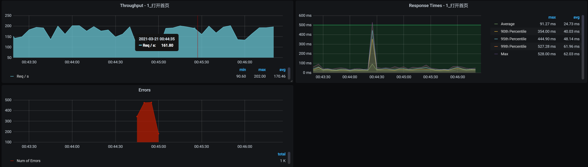
因为有两个Portal实例，所以TPS没有掉到底部，也就是说，另一个POD可以接管流量。所以，我们看到虽然业务有报错，但很快就恢复了。请你注意哦，我在这里的说“恢复”，并不是说被杀的容器也启动完成了，而是业务被另一个容器接管了。
为了验证Kubernetes拉起异常POD的处理能力，我们直接杀掉两个portal POD试一下：
[root@k8s-worker-6 ~]# docker kill -s KILL 080b1e4bd3b3 c9faa33744e0
080b1e4bd3b3
c9faa33744e0
[root@k8s-worker-6 ~]# docker ps |grep portal
d896adf1a85e 243a962aa179 "java -Dapp.id=svc-m…" About a minute ago Up About a minute k8s_mall-portal_svc-mall-portal-5845fcd577-dddlp_default_4ccb1155-5521-460a-b96e-e2a22a82f5ee_2
baee61034b5f 243a962aa179 "java -Dapp.id=svc-m…" About a minute ago Up About a minute k8s_mall-portal_svc-mall-portal-5845fcd577-cx5th_default_06117072-9fe2-4882-8939-3a313cf1b3ad_1
4be31b5e728b registry.aliyuncs.com/k8sxio/pause:3.2 "/pause" 7 minutes ago Up 7 minutes k8s_POD_svc-mall-portal-5845fcd577-dddlp_default_4ccb1155-5521-460a-b96e-e2a22a82f5ee_0
7b876dd6b860 registry.aliyuncs.com/k8sxio/pause:3.2 "/pause" 7 minutes ago Up 7 minutes k8s_POD_svc-mall-portal-5845fcd577-cx5th_default_06117072-9fe2-4882-8939-3a313cf1b3ad_0
[root@k8s-worker-6 ~]#
我们看下对应的TPS曲线表现如何：
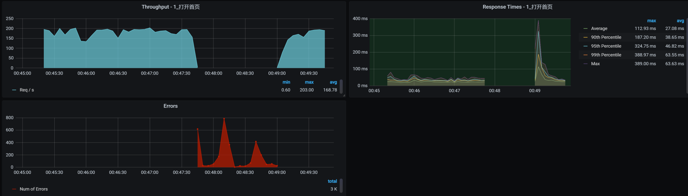
这下就很明显了，因为对应这个Portal服务，我只启动了两个Portal实例，所以在杀掉两个Portal服务的POD后，业务的TPS曲线直接全部报错了，过了1分30秒左右才恢复。至于这个恢复时间算不算长，就要取决于业务的成功率指标了。
在这个例子中，我们看到容器是可以自动恢复的，说明Kubernetes起了作用，我们只需要关注恢复时间是否达到业务的成功率指标就可以了。
驱逐容器
“容器被驱逐”在Kubernetes中是比较常见的问题，一旦资源不足就会出现。
现在，我直接在容器管理工具中点击“驱逐”来模拟场景。
为了展示在驱逐前后，POD确实被赶到其他worker上了，我们在模拟之前，先确定一下Order服务当前的状态：
可以看到，这个服务处于正常的Running状态下。
而接下来模拟驱逐容器，我们只需要在Kubernetes的管理界面找到这个容器，然后直接点“驱逐”按钮就可以了。
模拟好后，我们查看一下效果：
驱逐前：
[root@k8s-master-1 ~]# kubectl get pods -o wide | grep portal
svc-mall-portal-54ddfd6798-766pj 1/1 Running 0 36h 10.100.227.136 k8s-worker-6 <none> <none>
svc-mall-portal-54ddfd6798-ckg7f 1/1 Running 0 36h 10.100.227.137 k8s-worker-6 <none> <none>
驱逐后：
[root@k8s-master-1 ~]# kubectl get pods -o wide | grep portal
svc-mall-portal-7f7f69c6cf-5czlz 1/1 Running 0 47s 10.100.69.242 k8s-worker-3 <none> <none>
svc-mall-portal-7f7f69c6cf-7h8js 1/1 Running 0 110s 10.100.140.30 k8s-worker-2 <none> <none>
[root@k8s-master-1 ~]#
你看，POD的ID变了，worker也变了，说明Kubernetes已经把驱逐的POD拉起来了。
我们再来看看对应的TPS曲线：
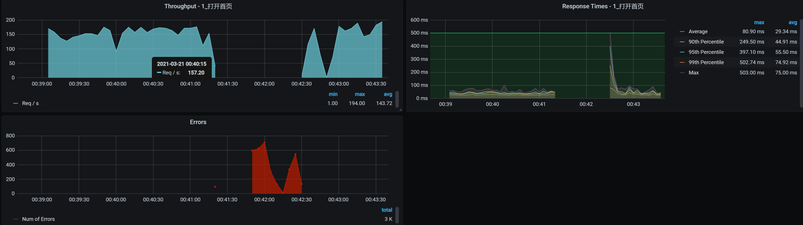
可见驱逐后的容器也恢复了。
虚拟机异常
我们在前面已经模拟了操作系统内部的异常，现在我们换个视角，从整个虚拟机KVM的操作系统角度来操作，看看虚拟机异常是什么样的效果。
这里我们直接kill虚拟机来模拟异常，其实这个异常在第26讲中就已经出现过，说明它是一个比较常见的异常场景。
kill虚拟机
我先把应用微服务移到worker-6上，后面我们就直接kill这个worker-6虚拟机。但是你要注意，不要把我们的微服务指定到worker-6上哦，因为指定了的话，微服务就不能运行在其他虚拟机上了。
然后我们来执行kill虚拟机的动作，具体这样操作：
[root@dell-server-2 ~]# virsh list --all
Id 名称 状态
----------------------------------------------------
1 vm-k8s-master-2 running
2 vm-k8s-worker-5 running
3 vm-k8s-worker-6 running
这中间有一个top查看虚拟机进程ID的动作哦，直接top后按c即可。
[root@dell-server-2 ~]# kill -9 3822
[root@dell-server-2 ~]# virsh list --all
Id 名称 状态
----------------------------------------------------
1 vm-k8s-master-2 running
2 vm-k8s-worker-5 running
- vm-k8s-worker-6 关闭
[root@dell-server-2 ~
你看，最后worker-6确实被关闭了。
现在我们再看看对应的TPS：
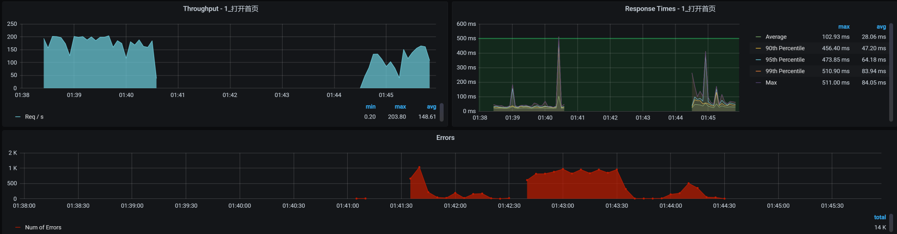
你看，worker-6被杀掉之后，TPS直接就掉到零了，同时也报了错。过了一段时间，应用被移走了，服务也恢复了。
最后，我们来看看转移的效果：
# 转移前
[root@k8s-master-1 ~]# kubectl get pods -o wide | grep portal
svc-mall-portal-54ddfd6798-766pj 1/1 Running 0 36h 10.100.227.136 k8s-worker-6 <none> <none>
svc-mall-portal-54ddfd6798-ckg7f 1/1 Running 0 36h 10.100.227.137 k8s-worker-6 <none> <none>
# 转移后
[root@k8s-master-1 ~]# kubectl get pods -o wide | grep portal
svc-mall-portal-7f7f69c6cf-5kvtl 1/1 Running 0 4m40s 10.100.69.249 k8s-worker-3 <none> <none>
svc-mall-portal-7f7f69c6cf-jz48w 1/1 Running 0 4m50s 10.100.140.24 k8s-worker-2 <none> <none>
[root@k8s-master-1 ~]#
你看，worker-6上的应用已经调度到其他节点（worker-2、worker-3）上了，说明生成了新的容器。
总结
如果你要做这样的异常场景，那么请你事先考虑好你的预期。我们对异常场景最基础的预期就是，在异常出现的时候，系统能快速恢复，这也是我们做异常场景的价值。如果不能快速恢复，业务也就随着异常掉下去了，这时候我们就要提Bug、提风险。
在这节课中，我们模拟了应用级异常、操作系统内部异常、容器级异常和整个操作系统级异常，在当前的微服务架构中，这些都是经常出现的异常场景。当然，它们并不能覆盖微服务架构中的全部异常场景。你可以根据上节课讲的异常范围图，把缺少的异常场景设计出来，以覆盖全面。
课后作业
最后，我给你留两道题，请你思考一下：
- 异常场景设计的关键点是什么？
- 如何判断异常场景的预期？
记得在留言区和我讨论、交流你的想法，每一次思考都会让你更进一步。
如果你读完这篇文章有所收获，也欢迎你分享给你的朋友，共同学习进步。我们下一讲再见！
© 2019 - 2023 Liangliang Lee. Powered by gin and hexo-theme-book.